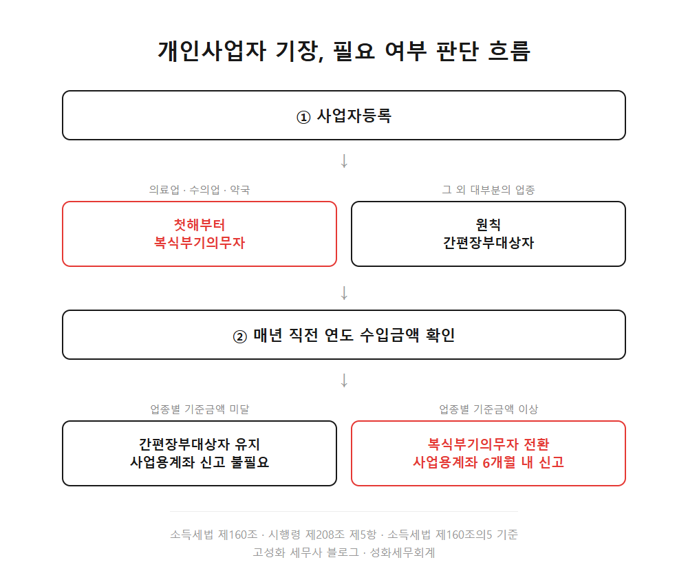
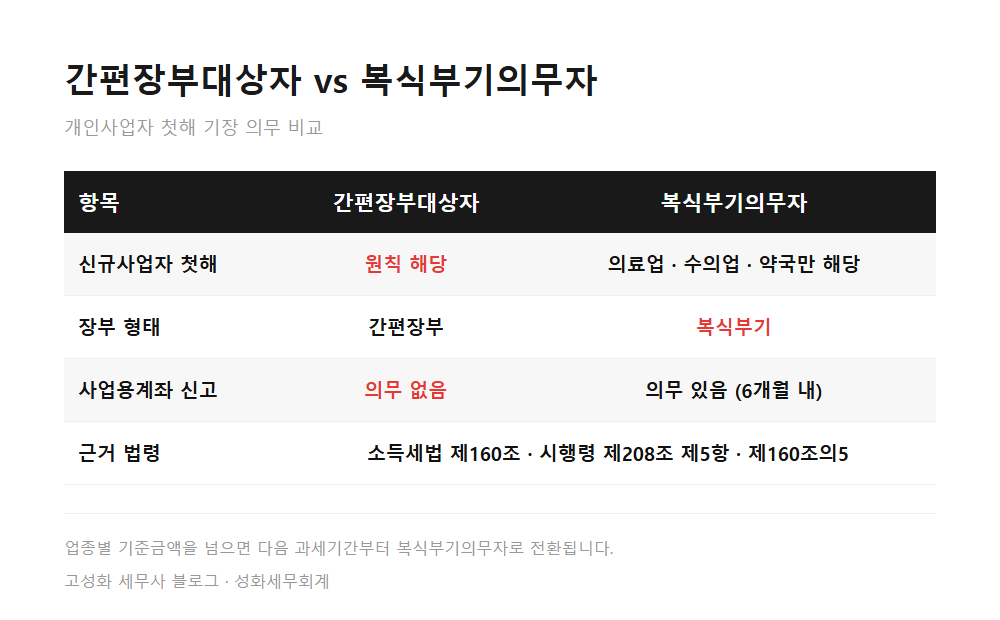
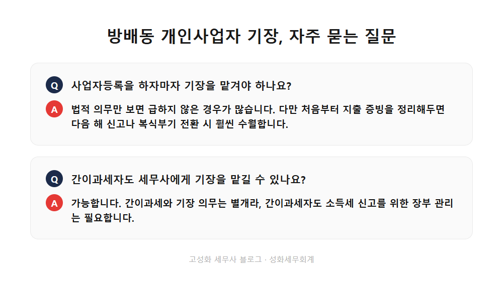

방배동 개인사업자 기장, 매출 없어도 필요한가

사무실이 서초구 방배천로에 있다 보니, 사업자등록증을 막 받은 분들이 종종 찾아오십니다.
손에 등록증을 들고 오자마자 묻는 말은 거의 똑같습니다. "저 이제 뭘 해야 하나요?"
오래 상담하다 보면 이 질문 뒤에 숨은 불안이 보입니다. 뭘 놓치고 있는 건 아닐까 하는 걱정입니다.
이 글을 보고 계신 분은 아마 이런 경우이실 겁니다. ①사업자등록을 막 마쳤거나, ②매출이 아직 없어서 기장이 필요한지 헷갈리시거나, ③간이과세자라 세무사는 필요 없다고 들으셨거나.
- 신규사업자는 대부분 간편장부대상자입니다
- 간이과세자도 기장이 필요할까요
- 사업용계좌 신고, 언제 필요한가요
한눈에 보기



자주 묻는 질문
사업자등록을 하자마자 기장을 맡겨야 하나요?
법적 의무만 보면 급하지 않은 경우가 많습니다. 다만 처음부터 지출 증빙을 정리해두면 다음 해 신고나 복식부기 전환 시 훨씬 수월합니다.
간이과세자도 세무사에게 기장을 맡길 수 있나요?
가능합니다. 간이과세와 기장 의무는 별개라, 간이과세자도 소득세 신고를 위한 장부 관리는 필요합니다.
매출이 늘면 언제 복식부기의무자로 바뀌나요?
직전 과세기간 수입금액이 업종별 기준금액 이상이 되는 해부터입니다. 전환 시점에는 사업용계좌 신고도 함께 챙겨야 합니다.
정리하면
오늘 다룬 내용을 다시 짚어보겠습니다. 신규사업자는 대부분 간편장부대상자로 시작합니다. 간이과세와 기장 의무는 별개의 판단이고요. 사업용계좌는 복식부기의무자에게만 해당합니다.
상담료가 얼마인지 몰라 미리 재보시는 경우가 종종 있는데, 이 정도는 통화로도 충분히 확인됩니다.
방배동, 서초 인근에서 사업자등록을 앞두고 계시거나 막 마치셨다면, 지금 상태가 어느 경우에 해당하는지부터 확인해보시길 권해드립니다. 편하게 문의 주세요.
본문 전체와 근거 조문은 블로그에서 확인하실 수 있습니다.